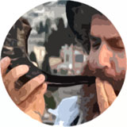
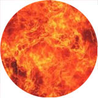
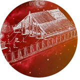

все видео на одной странице
видео по разделам и темам
СТРАНИЦА НА СТАДИИ РАЗРАБОТКИ

Арт-Мидраш
Раздел посвящен вопросам творчества в Священных Писаниях, творческого потенциала человека и творчества художников, музыкантов, поэтов и т.п. на страницах Библии.

Шофар - символика и традиция, Праздник Рош а-Шана
Согласно еврейской традиции шофар берет свое начало в испытании Авраама, о котором повествует Тора


Ранне христианство и антисемитизм.
Отменяется ли прежний, Синайский завет Новым? Сергей Конторович (пастор мессианской общины, Тель-Авив, Израиль) рассматривает корни антисемитизма в ранней церкви.


авапрвывап